Tender System
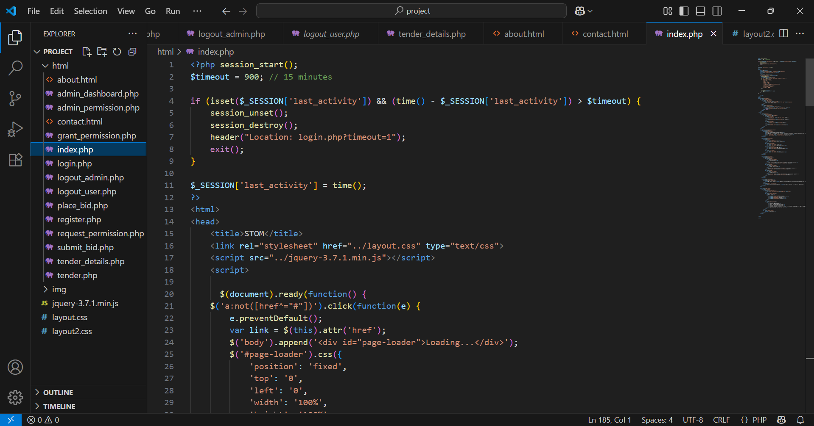
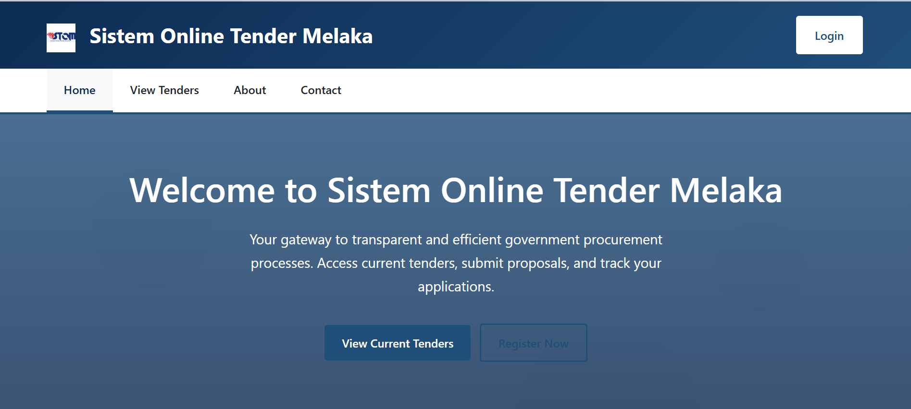
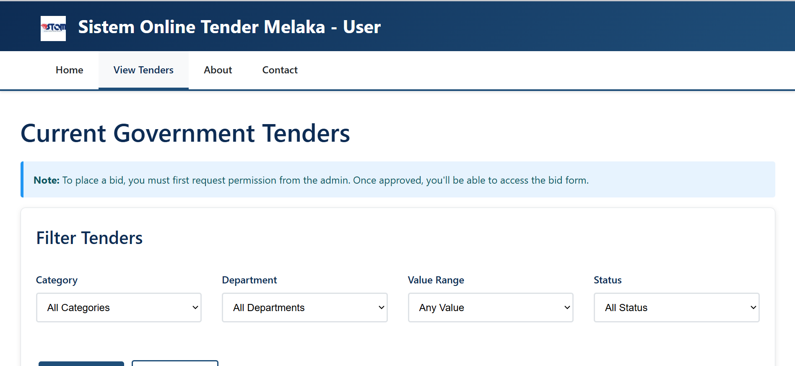
A full-stack tender system that allows users to bid on government projects. Built with modern UI/UX practices, role-based access, and secure bidding workflow.
- Technologies: PHP, MySQL, HTML/CSS, JavaScript
- Features: Admin approval system, tender filtering, secure login, bid permissions
Coffee Shop Ordering System
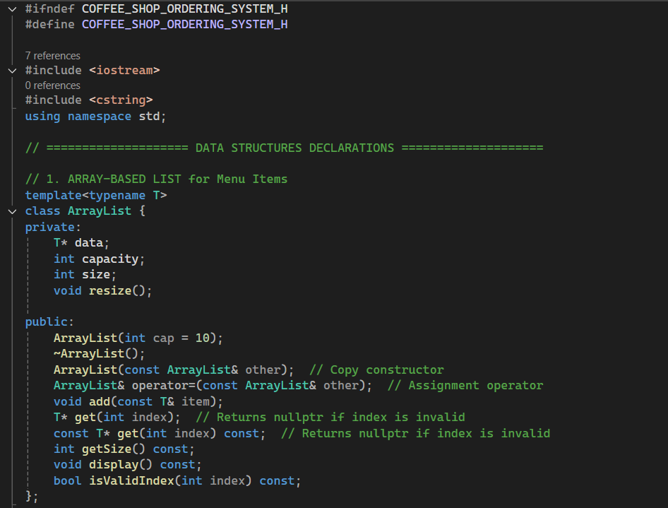
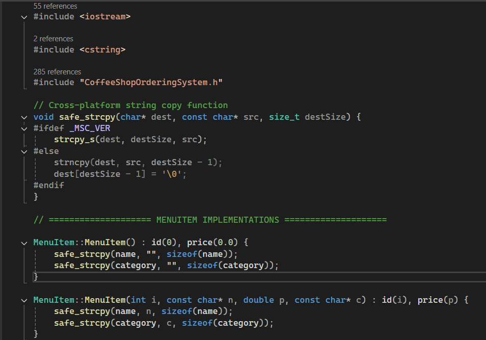
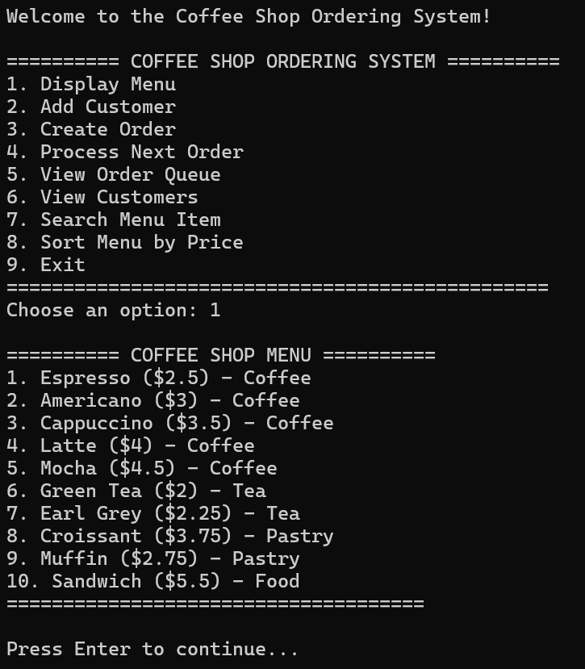
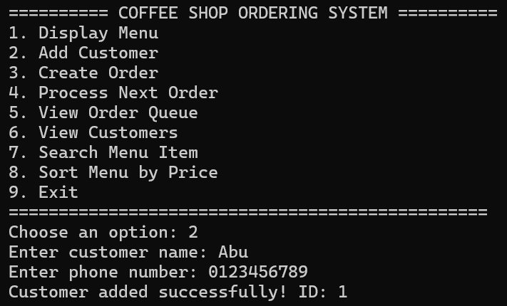
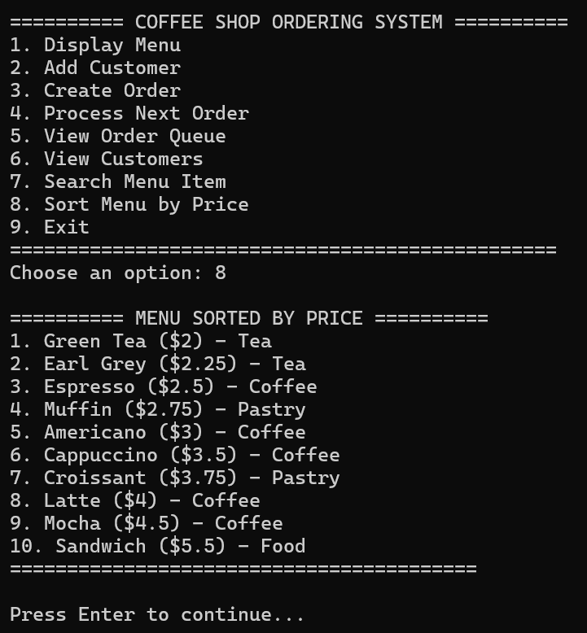
A web-based system to handle coffee shop operations such as menu browsing, order placement, customer management, and queue tracking.
- Technologies: HTML/CSS, JavaScript, PHP, MySQL
- Features: Menu CRUD, order management, real-time queue updates, user registration
Network Design Project
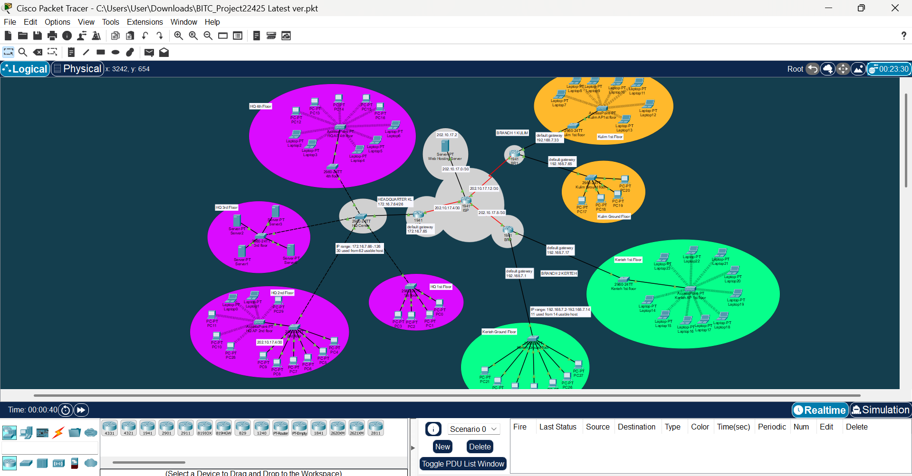
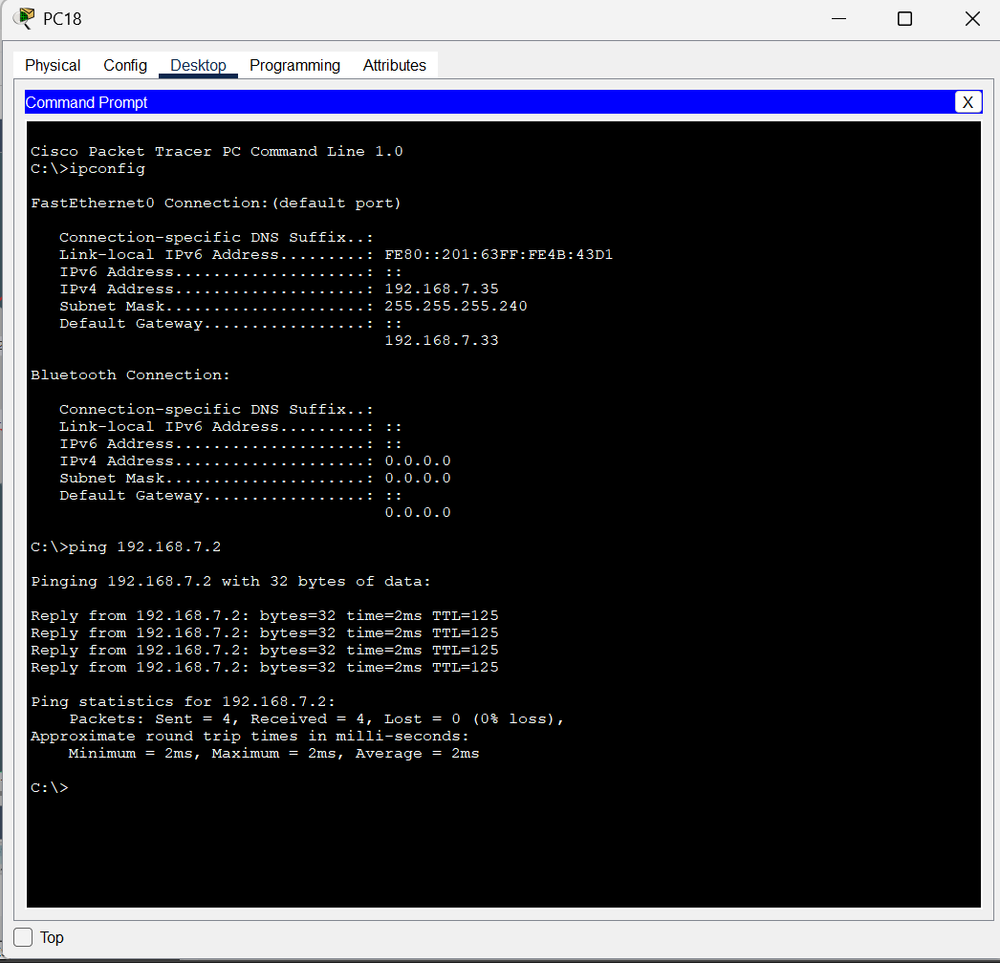
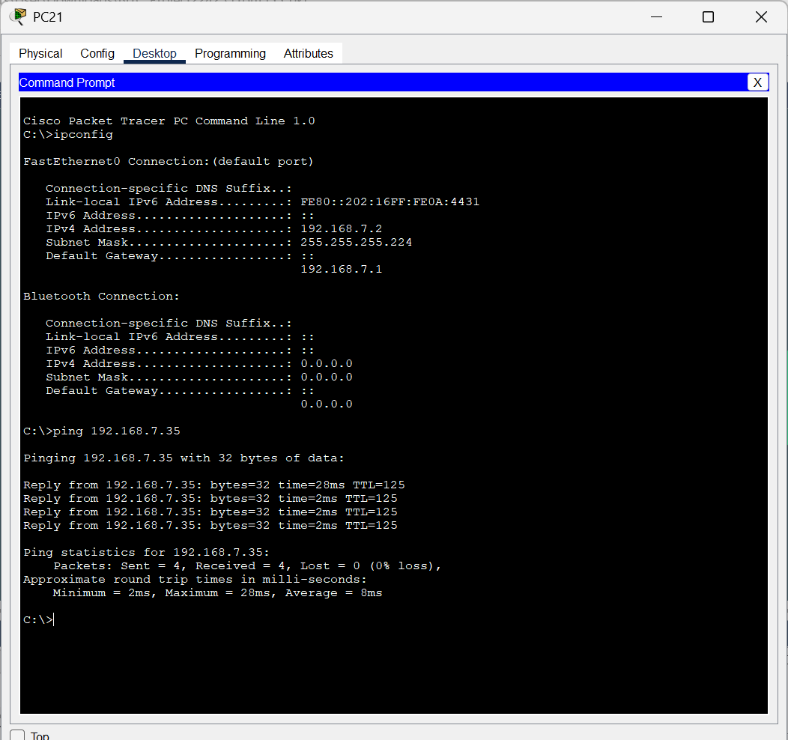
A Cisco Packet Tracer-based network design showing a scalable and secure architecture with proper IP addressing, VLANs, and routing configurations.
- Tools: Cisco Packet Tracer
- Focus: Inter-VLAN routing, subnetting VLSM and FLSM, WAN simulation, device configuration